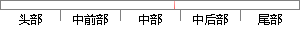

videoUrl = outputURL;
片段位置图

相似结果|
1
原句片段：videoUrl = outputURL;
相似片段 1：(void)cropWithVideoUrlStr:(NSURL *)videoUrl start:(CGFloat)startTime end:(CGFloat)endTime completion:(void (^)(NSURL *outputURL, Float64 video...
相似片段 2：XZAVMixObject *mixObj = [[XZAVMixObject alloc] init]; NSURL *audioURL; NSURL *videoURL; NSURL *outputURL; [mixObj audioMixVideoWithAudioURL:audio...
|
※ 片段修改建议 ※
近似词参考：